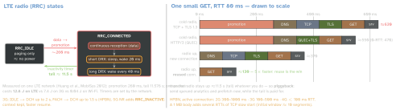

networking · folio
In one line: On cellular a small request is dominated not by bytes but by waking the radio (promotion from idle: ∼0.1–0.3 s on LTE, up to 2 s on 3G, then a tail of seconds at high power) and by round trips: DNS + TCP + TLS before the first byte, each one cellular RTT. So: fewer, earlier, bigger requests over connections you already have — and measure the phases, not the total.
Download PDF Print view LaTeX source


How it works
- Radio states (RRC): the phone holds a dedicated channel only in CONNECTED. Getting there is a signalling exchange (promotion); leaving is on an inactivity timer set by the carrier, and the radio burns near-peak power during that tail. Inside CONNECTED, DRX sleeps between short wake-ups.
- Consequence: a 1 KB ping every 30 s keeps the radio up ∼40 % of the time (a tail each); every 10 s, always. Sent together they pay one promotion + one tail.
- Round trips before a byte: DNS (1, unless cached) + TCP (1) + TLS 1.3 (1; TLS 1.2: 2) + request (1) — 4 RTTs. QUIC merges transport + TLS (3); a reused connection needs 1. Big bodies then pay slow start: the window doubles per RTT from ≈ 14 KB (RFC 6928).
- Loss on cellular is common: with HTTP/2 over TCP one lost packet stalls every stream; HTTP/3 stalls only its own stream and migrates across Wi-Fi ↔ cellular.
Connection reuse — the biggest lever
- One shared
URLSessionper configuration: its pool holds the warm connections. A session per request = full handshake every time. - HTTP/2: one connection, many streams — no sharding. Coalescing (RFC 9113 §9.1.1): a connection may serve another host if its certificate covers that host (browsers also want the same IP); the server refuses with 421 Misdirected Request. Put
api.andimg.on one cert and one IP. - Idle pool timeout is not API: Apple DTS — typically 30 s on HTTP/1.1, longer on HTTP/2, a few seconds on WWAN. “Warm” after a pause often means a new handshake.
Example — where did the time go?
func urlSession(_ s: URLSession, task: URLSessionTask,
didFinishCollecting m: URLSessionTaskMetrics) {
for t in m.transactionMetrics where t.resourceFetchType == .networkLoad {
func ms(_ a: Date?, _ b: Date?) -> Int { // -1 = phase skipped
guard let a, let b else { return -1 }
return Int(b.timeIntervalSince(a) * 1000) }
log("dns", ms(t.domainLookupStartDate, t.domainLookupEndDate),
"tcp", ms(t.connectStartDate, t.secureConnectionStartDate),
"tls", ms(t.secureConnectionStartDate, t.secureConnectionEndDate),
"ttfb", ms(t.requestStartDate, t.responseStartDate),
"reused", t.isReusedConnection, // iOS 10
"cell", t.isCellular, t.networkProtocolName ?? "?") // iOS 13
} }Fewer, earlier, bigger
- Kill waterfalls: 5 dependent calls = 5+ RTTs. Parallelise what is independent; a screen-level endpoint / BFF or GraphQL for what is not.
- Prefetch what the next screen almost surely needs, while the radio is already up; batch analytics and flush on a user-triggered request.
- Priorities:
URLSessionTask.priority(0–1, default 0.5) — a hint; cancel off-screen image loads; defer bulk work to a background session. - Warm up early: start the first API call (its DNS + TLS) at launch, in parallel with UI setup.
Adapt to the network
NWPathMonitor: isExpensive (cellular, hotspot), isConstrained = Low Data Mode (iOS 13) → skip prefetch, smaller images; per request allowsConstrainedNetworkAccess. waitsForConnectivity (iOS 11) waits for a path instead of failing. timeoutIntervalForRequest (60 s) = max idle gap; timeoutIntervalForResource (7 days) = whole task.
Measure
Metrics per phase (example) from the field · Instruments → Network → HTTP Traffic (Xcode 13): sessions → tasks → transactions, on device · Network Link Conditioner (Settings → Developer): 3G, LTE, Very Bad Network, 100% loss.
Traps
- “Fast on office Wi-Fi” — test on Link Conditioner and a real cell.
- “Need more bandwidth” — API calls are latency-bound: count RTTs.
- A new
URLSessionper request — a handshake every time. - Polling every 10 s — the radio never leaves the tail. Push or batch.
timeoutIntervalForRequestresets on every packet: not a total.